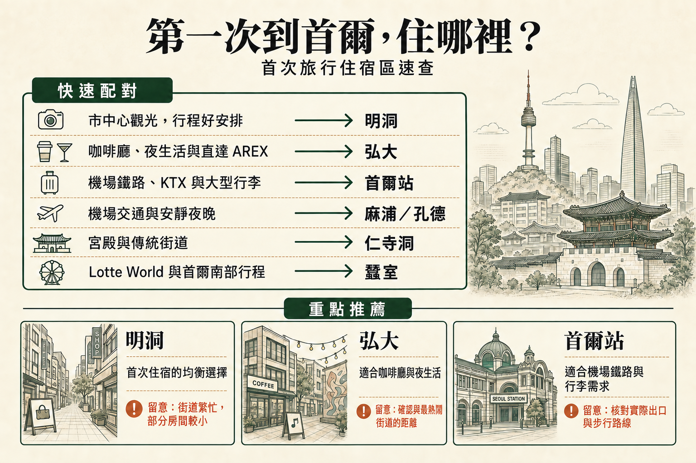

在首爾選一個住宿區，通常就夠了
多數第一次旅行，在首爾不同區域換飯店，增加的打包與入住時間，比省下的交通還多。選符合大多數日子的住宿區，再搭地鐵去其他地方。只有行程本身明顯轉換，例如首爾搭配另一座城市時，分段住宿才更合理。
明洞是許多首爾初訪行程中，各方面均衡、最容易安排的住宿區。想逛咖啡廳、夜生活與直達機場鐵路，弘大很合適；行李比晚間氣氛更重要時，首爾站或麻浦／孔德能讓抵達與離開輕鬆許多。
多數第一次旅行，在首爾不同區域換飯店，增加的打包與入住時間，比省下的交通還多。選符合大多數日子的住宿區，再搭地鐵去其他地方。只有行程本身明顯轉換，例如首爾搭配另一座城市時，分段住宿才更合理。
第一次來，房間稍便宜不一定更划算。車站路線直接、有足夠行李空間，以及一天結束能輕鬆走回飯店，省下的時間與體力，可能比一點每晚價差更有價值。
長途飛行後手拉行李箱，第一次進首爾的感受很不同。直達鐵路很有用，但轉乘、車站大小、正確出口與最後走到飯店的路，常同樣重要。
位置居中不一定代表房間吵。大馬路、夜生活街道與後勤巷弄，午夜後感受可能很不同；飯店確切街區，常比區名更能說明睡眠品質。
有些人想飯店外就有咖啡廳與夜生活，有些則想觀光一天後回到安靜街道。弘大與梨泰院夜間自然較活躍，仁寺洞或麻浦／孔德通常較平靜。
最方便的飯店，往往是第一天最不需要費力弄懂怎麼去的那間。車站動線清楚、有電梯、街道簡單、回程容易掌握，對還不熟悉首爾的旅客，影響可能比想像中大。
附近有餐廳、便利商店、咖啡廳與基本購物，能讓頭幾天更輕鬆。行程改變、天氣轉差，或沒人想為了晚餐再搭一次地鐵時，尤其有用。

| 區域 | 適合需求 | 機場與行李 | 每日移動 | 晚間氣氛 | 主要取捨 |
|---|---|---|---|---|---|
| 明洞 | 初訪觀光 | 整體方便 | 市中心交通很方便 | 繁忙、便利 | 以旅客為主，常有人潮 |
| 弘大 | 咖啡廳、夜生活與活躍夜晚 | 直達 AREX | 交通不錯，但位於許多歷史景點西側 | 熱鬧到深夜 | 夜生活街道較吵 |
| 首爾站 | 重行李、AREX 與 KTX | 非常方便 | 交通銜接方便 | 偏重實用，街區氣氛較弱 | 街區特色較不鮮明 |
| 麻浦／孔德 | 機場交通與安靜住宿 | 很方便 | 地鐵連接佳 | 較安靜、有日常生活感 | 飯店外的主要景點較少 |
| 仁寺洞 | 宮殿、文化與安靜夜晚 | 普通 | 歷史市中心交通很方便 | 安靜 | 部分街道較小，深夜選擇較少 |
| 蠶室 | Lotte World 與首爾東部 | 機場路程較長 | 首爾東南部交通很方便 | 現代、較安靜 | 離經典市中心景點較遠 |
| 江南 | 商務與首爾南部行程 | 路程較長 | 首爾南部移動方便 | 繁忙都市感 | 需反覆往歷史市中心移動 |
| 東大門 | 購物與深夜活動 | 依實際飯店不同 | 市中心東側交通佳 | 深夜仍活躍 | 區域大，各處便利性差異明顯 |

第一次去首爾，明洞是很容易掌握的地方之一。購物街、餐廳、便利商店、換匯所與大型美妝店集中在相對小的區域，許多日常旅行需求不用走遠就能解決。
位置也適合以觀光為主的行程。明洞站與乙支路一側提供幾種穿越市中心的方式，市廳、南大門、南山與鍾路也容易抵達。如果每天混合購物、歷史景點與不同區域用餐，就很實用。
取捨是明洞繁忙、明顯以旅客為主。街道可能擁擠，房間常偏小，住在不合適的一側，步行可能比地圖上看起來多。不過短期初訪，這份便利往往值得妥協。
明洞住哪裡 →
觀光結束後，還想逛咖啡廳、夜生活與活躍街區，弘大更合適。弘大入口站也有直達的 AREX 普通列車，第一次來很容易理解機場往返方式。
最熱鬧街道可能吵到深夜，車站本身也大。飯店稍微離開主要夜生活街區，仍能享有交通便利，晚上回去也更舒服。
弘大住哪裡 →
帶大行李抵達，或計畫搭 KTX 去外地，首爾站是最實用的住宿區之一。AREX、鐵路與多條地鐵線，能明顯減輕抵達與離開的負擔。
這一區的交通實用性勝過氣氛。想飯店外就有熱鬧咖啡廳與晚間街景，可能更適合別區；優先考慮移動簡單的人，通常會覺得首爾站值得這項取捨。
首爾站附近飯店 →
想要機場交通簡單，又不想住弘大熱鬧中心，麻浦與孔德是實用替代選擇。孔德有直達 AREX 普通列車，周邊街區較安靜，也更有日常感。
主要景點不在飯店門外，觀光日需要多搭一些地鐵。換來的是抵達與離開更容易，晚間通常也比首爾最繁忙的旅客區從容。
孔德站附近飯店 →
喜歡宮殿、傳統街道與首爾老城區，仁寺洞尤其合適。景福宮、益善洞與幾個歷史街區容易串起，晚間通常比弘大或明洞安靜。
部分飯店在小街巷裡，重行李可能讓最後一段步行不方便。重視文化與安靜氣氛的旅客，通常能接受這項取捨。
閱讀仁寺洞指南 →
Lotte World、Seoul Sky、石村湖或首爾東南部其他景點，已占行程重要部分時，蠶室最實用。街區現代、寬敞，很容易在這裡度過一整天。
但它離許多宮殿與歷史市中心景點遠得多。第一次來，如果只計畫一天在蠶室，通常住市中心、需要時再過來更有利。
閱讀蠶室指南 →
漢江以南的商務、診所、購物或預約，已決定整趟行程時，江南很合理。這是首爾重要街區，設施完善，附近也有很多可做的事。
第一次來若以宮殿、明洞、仁寺洞與其他北側景點為主，反覆跨城可能很累。江南適合特定行程，不是理所當然的高級首選。
閱讀江南指南 →
對購物、東大門設計廣場，以及市中心晚間仍活躍的街區有興趣，東大門很合適。前往市內幾個區域，也有實用交通連接。
區域範圍廣，確切飯店位置很重要。兩間都說位於東大門，車站步行與每日便利性可能差很多。
閱讀東大門指南 →房間最多可住幾人，不一定代表這些人能舒服入住。床鋪配置與實際可用空間，和訂房系統標示的人數上限同樣重要。
即使房型名稱相同，床型也可能帶來很大差異。抵達前，值得弄清楚實際床數與尺寸。
首爾市中心房間可能偏小。照片看起來夠用，兩個大行李箱攤開後，感受可能完全不同。
多數現代飯店有電梯，但從街道或地鐵過來，仍可能經過樓梯。長途飛行後，或帶重行李時，會更明顯。
最後幾百公尺往往比想像中重要。坡道、大路口與地下通道，可能讓地圖上短短一段距離，變成不方便的飯店進出路線。
飯店可能靠近車站，卻離有電梯、或最好過馬路的出口很遠。第一次來，選對出口能大幅簡化抵達流程。
搭機前已弄清楚櫃台時間與非營業時段入住流程，晚到會更容易。接近午夜才到首爾時，尤其重要。
直達 AREX 很有用，但依飯店位置與行李數量，機場巴士或計程車有時能提供更簡單的最後一段移動。
入住前或退房後可寄放行李，能讓第一天與最後一天觀光輕鬆許多，尤其班機時間和飯店入住／退房時間對不上時。
有早餐方便，但周圍有咖啡廳、便利商店與簡單餐廳的飯店，也可能同樣實用。附近用餐選擇，往往比規劃時想像中更有幫助。
不同住宿的浴室大小、淋浴配置與隱私程度，可能差異很大。照片常比房型說明更能看出情況。
住得較久時，洗衣設施很有價值，也能少帶衣服。附近自助洗衣店，可能和館內洗衣機同樣有用。
班機、抵達時間或行程仍不確定時，彈性取消有實際價值。稍貴的彈性房價，有時比最便宜的不可退款方案更實用。
知名區域不一定適合每趟旅行。白天最常去的地方，比單看名氣更重要。
便宜房間若增加長距離步行、反覆地鐵轉乘，或一天結束還要搭計程車，可能不划算。短期初訪，便利性有實際價值。
弘大與其他夜生活區可以很適合住宿，但最吵的街區不適合所有人。附近支巷可能享有同樣區位，晚上卻輕鬆許多。
首爾每個街區都有取捨。通常，能讓實際行程中最重要的部分更簡單，比看起來每一項都最強的區域更合適。
街區決定後，飯店就容易比較。房間大小、實際車站步行、機場交通，以及前述細節，通常比只看每晚房價更有用。
對許多初訪旅客，明洞是各方面均衡、最容易安排的選擇，市中心觀光、購物與吃飯都容易串起。更重視夜生活與直達機場鐵路時，弘大就更有吸引力。
第一次旅行以觀光與購物為主，通常明洞更方便。想逛咖啡廳、享受夜生活與更活躍的晚間氣氛，則弘大更合適，還有直達 AREX 的優勢。
適合，尤其喜歡宮殿、傳統街道與安靜夜晚的旅客。夜間不像弘大那麼熱鬧，但前往市中心幾個歷史街區很方便。
行程本來就有商務、診所，或好幾項漢江以南安排，江南很合適。如果主要是宮殿與歷史市中心，則較沒效率。
深夜抵達時，機場到飯店最後一段路更重要。簡單的車站路線、機場巴士站或計程車接駁，可能比地址稍微更居中還值得。
首爾站與孔德特別適合帶大行李，弘大若靠近弘大入口站也方便。實際出口與到飯店的最後一段步行仍然重要。
明洞是許多初訪旅客最簡單的購物住宿區；想深夜購物、在市中心東側活動，東大門更合適。
想讓咖啡廳、酒吧與深夜活動都在飯店附近，弘大最容易安排。住得稍微遠離最繁忙街道，夜晚會更舒服。
明洞是許多家庭容易上手的第一選擇；Lotte World 占行程重要部分時，蠶室尤其實用。對家庭而言，房間大小與車站動線，比區名本身更重要。
重視機場交通、KTX 行程或帶重行李時，首爾站是很好的住宿區。它實用性勝過氣氛，想要飯店外夜晚就很熱鬧的旅客，可能更喜歡別區。
最便宜的房間不一定最划算。位置不方便，可能增加交通時間、計程車費與辛苦的步行，短期初訪尤其有感。
需要。Naver Map 顯示的實際出口、步行路線與街道配置，可能比飯店頁面標示的距離更有用。
多數初訪旅客不必比較首爾每個地方。明洞、弘大、首爾站或孔德，通常已涵蓋主要取捨；行程有更明確重點時，再考慮仁寺洞、蠶室或江南。
首爾主要旅客街區通常人多、交通連接良好，但飯店所在街道仍重要。照明、從車站回來的路，以及深夜活動情況，比單靠區名更值得實際考量。
明洞仍是許多初訪旅客各方面均衡、最容易安排的住宿區。夜生活與直達機場鐵路更重要時，弘大是更合適的替代選擇；行李與抵達離開的移動，比晚間氣氛更值得關注時，首爾站或麻浦／孔德更合理。